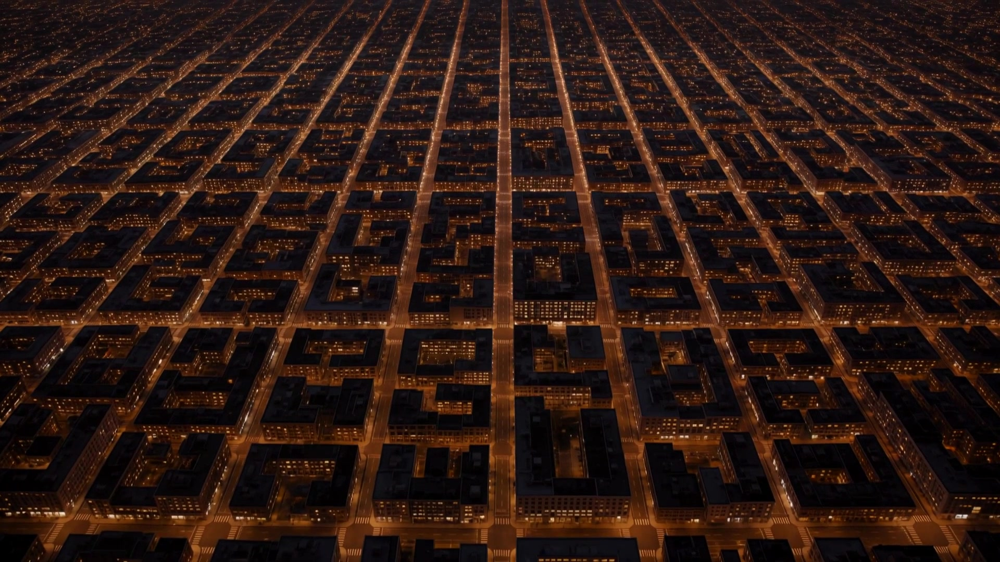
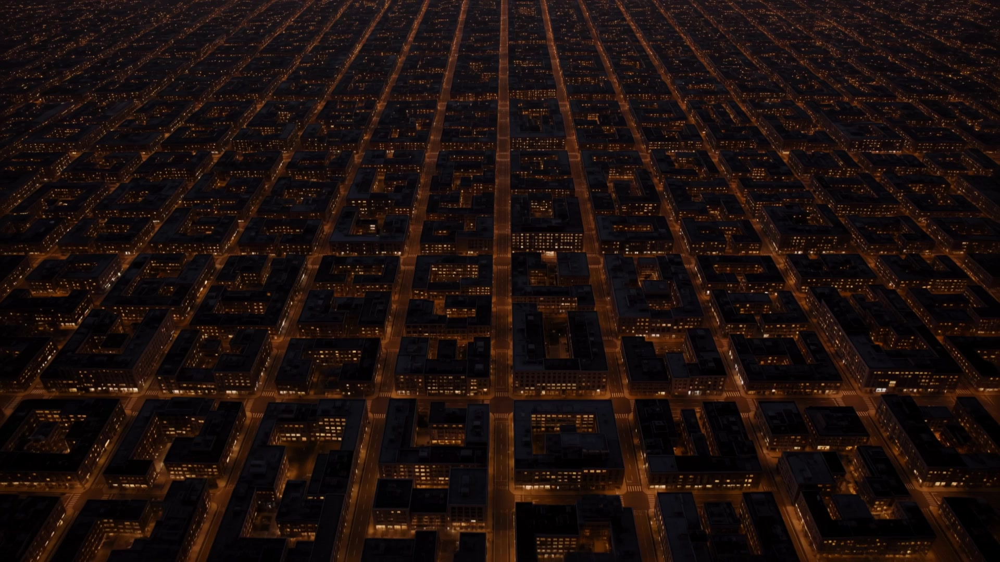
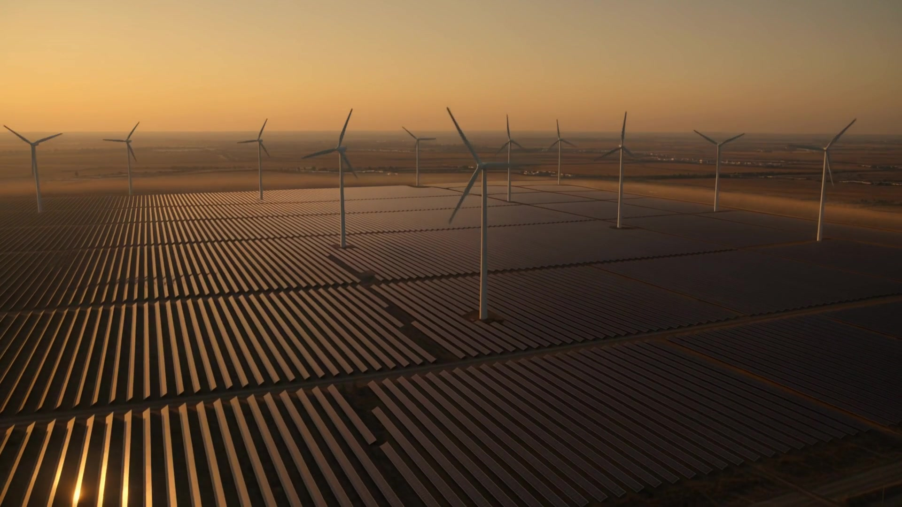
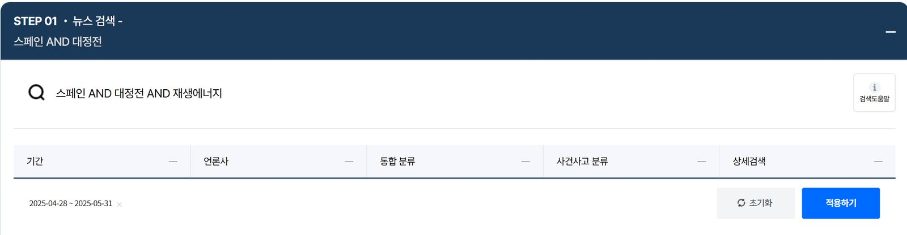

도시의 불이한꺼번에 꺼졌어요
이베리아반도 대정전. 사람들은 곧 이유를 찾기 시작했어요.

제목이말하지 않은 것은?

본문에는 50kW 설비라는 조건과 ‘예상’이라는 말이 숨어 있어요.
질문하고, 확인하고,근거로 제안해요
에너지 기사에서 질문을 만들고 → 원자료로 탐구한 뒤 → 그린 벤처 가치 제안서를 써요
수업 시작 ↓이 수업의 질문
같은 사건도 제목에 따라 다르게 보여요.
그 주장은 근거로 어디까지 말할 수 있을까요?
공통국어2 · 고등학교 1학년 · 모둠 공동 보고서 한 부를 4차시 동안 이어 써요
에너지소양 주제에너지안보에너지믹스무탄소 에너지사회경제
대정전 기사로 전력망 안정성(에너지안보)을, 학교 태양광 기사로 무탄소 전원과 에너지 믹스 개선을, 전기요금·설치비·진단 서비스 비용으로 사회경제를 다뤄요.
근거가 뒷받침하는 범위를 확인하며 읽고, 같은 기준으로 써요
같은 화제의 글과 자료도 관점과 형식에 따라 다르게 구성돼요. 독자는 근거가 뒷받침하는 범위를 확인하며 통합적으로 읽고, 자기 논증에도 같은 기준을 적용해 설득력 있는 글을 써요.
[10공국2-02-02] 동일한 화제의 글이나 자료라도 서로 다른 관점과 형식으로 표현됨을 이해하며 읽기 목적을 고려하여 글이나 자료를 주제 통합적으로 읽는다. (1·2차시)
[10공국2-03-02] 논증 요소에 따른 분석을 바탕으로 효과적으로 내용을 조직하여 논증하는 글을 쓴다. (2차시 비약 검토 · 3·4차시)
[10공국2-03-03] 신뢰할 수 있는 정보를 종합하여 복합 양식 자료가 포함된 공동 보고서를 쓴다. (3·4차시 · 모둠 공동 보고서)
4차시 흐름 — 첫 시간의 질문을 지우지 않고 그 아래에 이어 써요
에너지 담론의 프레이밍, 주장과 근거의 관계, 그린 벤처의 고객과 가치 제안
검색어 조정, 기사와 조사보고서 대조, 논리적 비약 검토, 독자를 고려한 논증과 고쳐쓰기
원문을 확인하며 모둠원의 해석을 검토하고, 확인한 범위 안에서 에너지 이용 개선을 제안해요
인터넷이 안 되는 교실: 교사가 고른 두 기사(학교 태양광·대정전)의 제목·핵심 구절 출력본과 교육부 브리핑 1쪽, ENTSO-E 발표자료 발췌 번역본 출력본으로 진행(빅카인즈 시범은 이 페이지의 화면 캡처로 대신)
프레이밍 돋보기
제목의 낱말을 눌러 보세요
밑줄 친 낱말을 누르면, 제목이 주는 첫인상과 본문·원자료가 실제로 말하는 시점·대상·조건이 나란히 펼쳐져요.
제목이 주는 첫인상
본문·원자료가 실제로 말하는 것
교육부는 50kW 설비를 설치할 때 연간 약 1천만 원의 절감을 예상했다. 우리 학교의 절감 효과는 따로 확인해야 한다.
조건이 붙은 예상액을 모든 학교의 확정된 효과처럼 말했다면 → 성급한 일반화를 의심해 볼 수 있어요.
제목이 주는 첫인상
본문·원자료가 실제로 말하는 것
영국에서 주파수가 안정된 사례로 스페인 정전의 원인을 어디까지 설명할 수 있을까?
질문한 이유: 기자는 두 나라의 사례를 비교했고, 같은 날 인터뷰에서는 원인 조사가 진행 중이라고 했어요. 두 사고가 시작된 조건도 같았는지 궁금해졌어요.
프레이밍이 있다는 것과 논리적 오류가 있다는 것은 달라요. ‘편향됐다’고만 쓰지 말고, 어떤 표현이 무엇을 강조했는지 설명해 봅시다.
수업 진행
차시를 고르고 한 단계씩 넘겨요
← → 키로 단계를 넘길 수 있어요. 교사 모드를 켜면 발문·유의점이 함께 보여요.
본문을 열기 전에 제목부터 읽어 봅시다
아시아경제 · 2025. 5. 25.
이베리아반도 대정전이 보여준 재생에너지의 딜레마
기자가 정전의 원인을 어디에서 찾을 것 같나요? 어떤 말 때문에 그렇게 생각했나요?
모둠에서 첫인상을 이야기해 봅시다. 본문을 읽으면 처음 판단이 달라질 수도 있어요.
오늘의 목표
기사의 제목과 본문을 대조하고 같은 화제를 다룬 다른 기사와 비교해, 기사가 강조하는 관점과 그 판단의 근거를 설명하고, 더 알아보고 싶은 점을 질문으로 써요.
빅카인즈에서 기사 찾기 · 제목과 본문 함께 읽기
우리 모둠이 읽을 기사 한 편 찾기
비판적으로 읽고 탐구 질문 쓰기
오늘의 기록: 공동 보고서 「기사와 탐구 질문」
사건 이름으로 검색을 시작해요
뉴스검색·분석 → STEP 01 뉴스 검색 → 검색어 스페인 AND 대정전
빅카인즈 뉴스 검색 열기 ↗
원인을 미리 정하지 않고, 사건을 가리키는 말을 넣어요.
정전이 일어난 때로 기간을 정해요
기간 → 직접입력 2025-04-28 ~ 2025-05-31 → 적용하기

궁금한 쟁점을 검색어에 더해요
STEP 01을 다시 열고 AND 재생에너지를 더한 뒤 적용해요.

처음부터 ‘재생에너지 때문에’라고 검색하면 어떤 기사를 놓칠까요?
같은 날 나온 두 제목을 읽어 봅시다
두 글은 2025년 4월 28일 스페인·포르투갈에서 일어난 정전을 다뤄요.
각 제목에서 가장 먼저 눈에 들어온 말은 무엇인가요?
해설과 인터뷰는 어디까지 말했나요?
본문은 “재생에너지 구축 속도를 따라가지 못한 전력망”을 이야기하고, 주파수가 떨어졌지만 저장장치 등이 가동돼 전력 공급이 이어진 영국 사례를 함께 들어요.
진행자가 원인이 밝혀졌는지 묻자, 연구위원은 무엇이 원인이고 무엇이 결과인지조차 아직 완전히 파악하지 못했다고 답해요.
기자는 왜 영국의 사례를 든 걸까요?
위의 프레이밍 돋보기(사례 2)로 낱말마다 확인해 볼 수 있어요.
저는 영국 사례를 읽다가 이 점이 궁금해졌어요
탐구할 질문 — 영국에서 주파수가 안정된 사례로 스페인 정전의 원인을 어디까지 설명할 수 있을까?
질문한 이유 기자는 두 나라의 사례를 비교했어요. 인터뷰에서는 원인 조사가 진행 중이라고 했어요. 두 사고가 시작된 조건도 같았는지 궁금해졌어요.
이제 우리 모둠이 읽을 기사 한 편을 골라 봅시다.
우리 모둠이 읽을 기사 한 편을 고르세요
찾을 말: 스페인 AND 대정전 학교 AND 태양광 폭염 AND 전력수요
빅카인즈 열기 ↗- 검색어와 기간, 제목, 언론사, 날짜, 링크를 적어요.
- 제목이나 본문의 어느 말이 궁금했는지, 그 표현을 근거로 고른 이유를 써요.
- 찾기 어렵다면 선생님이 준 수업용 기사 「학교마다 전기료 연 1천만 원 줄어든다」를 골라도 돼요.
수업용 기사 펼쳐 읽기
학교마다 전기료 연 1천만 원 줄어든다
학교 지붕에서 만든 전기로 교실의 불을 켜면 전기요금이 얼마나 줄까? 교육부는 2026년 2월 26일 ‘햇빛이음학교’ 계획을 발표했다. 낮에 학교 지붕에서 만든 전기를 학교에서 쓰겠다는 구상이다. 교육부는 50킬로와트(kW) 설비를 설치한 학교의 연간 전기요금 절감액을 약 1천만 원으로 예상했다. 노후 건물 등 설치가 어려운 학교도 있다. 교육부는 학생들이 학교의 발전량을 확인하고 그 기록을 수업에 활용할 수 있도록 할 계획이다.
교육부 브리핑을 바탕으로 쓴 수업용 기사 · 교육부 브리핑 ↗
어떤 표현을 보고 그렇게 생각했나요?
제목에서 눈에 띈 말을 가리고 읽어 보세요. 그 말을 보고 어떤 원인이나 효과를 떠올렸나요?
처음 생각을 뒷받침하거나 바꾸게 한 구절. 기자의 설명인가요, 인용한 사람의 말인가요?
사건의 어떤 점을 강조하나요? 제목과 본문의 표현을 근거로 설명해요.
예시답안 — 학교 태양광 글을 고른 모둠
제목과 첫인상 ‘학교마다’를 보고, 어느 학교든 해마다 같은 금액을 아낄 수 있다고 생각했다.
본문과 프레이밍 본문에는 ‘50kW’ 조건과 설치가 어려운 학교가 나온다. 제목은 설치 조건보다 전기요금 절감 효과를 강조했다.
질문과 이유 모든 학교가 같은 금액을 아낄 수 있을까? 제목과 달리 본문에 조건이 있어, 예상액의 근거가 궁금하다.
기사만으로 답하기 어려운 점은 무엇인가요?
- 탐구 질문 — 확인할 대상과 조건이 드러나게 써요.
- 질문한 이유 — 어느 표현과 어느 구절을 읽고 질문이 생겼는지, 처음 생각이 어떻게 달라졌는지.
- 다음에 찾을 자료 — 기사에 나온 기관이나 자료 이름, 그 자료에서 확인할 말.
예시 — 다음에 찾을 자료
기사는 어떤 자료를 근거로 결론을 내렸나요?
공동 보고서에서 질문이 생긴 제목이나 문장을 다시 읽어요. 기사 속 누구의 주장인지 확인하고, 예상 답을 말해 봅시다.
오늘의 목표
모둠의 질문에 맞는 원자료를 찾아 기사에 제시된 결론의 범위를 검토하고, 판단의 근거가 되는 내용과 아직 모르는 점을 구분해요.
기사의 주장을 원자료의 목적·대상·조건과 대조
근거만으로 결론까지 말할 수 있는지 판단
근거로 알 수 있는 내용과 아직 모르는 점 쓰기
기사의 주장을 원자료에서 확인하세요
기사에 나온 기관과 자료 이름으로 원자료를 열어요. 발행처, 날짜, 확인한 쪽이나 검색한 말을 적어요.
누구를, 어느 기간과 조건에서 다룬 자료인가요? 실제로 확인한 결과인가요, 앞으로의 예상인가요?
자료의 어떤 내용이 기사 속 주장의 근거가 되나요? 「근거 검토」에 적어요.
같은 사건을 기사와 원자료는 어떻게 다르게 다루나요? 누가 어떤 목적으로 썼는지, 글의 형식(보도·해설·발표자료)이 무엇을 앞세우는지 구절을 들어 견줘요.
태양광: 브리핑에서 ‘50kW’와 ‘전기요금’ 찾기 · 대정전: 선생님이 나누어 준 최종 조사 발표자료(영문) 4쪽·12쪽 발췌 번역본 읽기
브리핑 원문의 단위 오기 주의 — 장관 발언의 “학교당 연간 68MW의 전기를 생산”은 68MWh(=68,000kWh)의 오기로 보임(MW는 순간 출력, MWh는 1년 동안 만든 전기량). 50kW × 연 약 1,360시간 ≈ 68MWh, 1,000만 원 ÷ 68,000kWh ≈ kWh당 약 147원(교육용 어림셈). 학생이 이 문장을 찾으면 ‘자료에도 오류가 있을 수 있다’는 확인 활동으로 활용 · 같은 브리핑 문답에는 설치비 학교당 약 1억 6,000만 원, 단순 회수 약 15년, 자가소비 방식(남는 전기는 팔지 않음)이 나옴 — 3차시 ‘진단 서비스’의 근거로 쓸 수 있음 (출처: 정책브리핑 교육부 「햇빛이음학교 사업 추진계획」 브리핑, 2026. 2. 26.)
먼저 끝난 모둠: 같은 사건을 다룬 다른 기사 한 편을 찾아 제목·관점을 우리 기사와 견주기
자료에 나온 조건을 확인해 적었어요
학교 태양광 모둠이 「자료의 날짜와 적용 조건」에 쓴 답 — 우리 모둠이 먼저 쓴 뒤 열어 보세요.
예시답안 펼치기
교육부 「햇빛이음학교」 브리핑, 2026. 2. 26. 웹 문서에서 ‘50kW’를 검색하고 절감액에 관한 설명을 읽었다.
50kW 설비를 설치하는 학교를 가정했다. 노후 건물 등 설치하기 어려운 학교도 있다.
약 1천만 원은 앞으로 아낄 것으로 예상한 금액이다. 모든 학교의 실제 절감액을 확인한 값은 아니다.
우리도 대상과 조건을 적었는지, 예상과 실제 결과를 구분했는지 확인해요.
도표의 화살표 하나를 따라 읽어 봅시다
ENTSO-E 전문가 조사단 최종 조사 발표자료 12쪽 · 2026. 3. 20. (도표 일부를 다시 그림)
화살표는 어디에서 어디로 이어지나요? 이 경로 말고도 연결된 요인이 있나요?
ENTSO-E 조사 자료 목록 ↗ 최종 조사 발표자료 PDF(영문) ↗4쪽에서 확인할 것 — 이 조사의 목적
‘학교마다’라고 말할 수 있을까요?
학교마다 전기료 연 1천만 원 줄어든다
50kW 설비를 설치할 때 학교당 연간 약 1천만 원을 아낄 것으로 예상했어요.
이 자료로 우리 학교의 절감액까지 말할 수 있나요? 그렇게 판단한 이유는 무엇인가요?
어느 설명이 빠졌는지 찾아보세요
우리 기사에 맞는 질문을 골라 주장과 근거를 비교해 읽어요.
두 일이 함께 일어났다는 사실로 원인까지 단정했나요? 그 사이의 작동 과정이나 다른 원인을 확인했나요?
다른 지역의 결과로 이 사건을 설명하나요? 비교한 두 곳의 조건이 같은지 확인했나요?
한 조건에서 나온 수치를 모든 대상에 적용했나요? 예상한 결과를 확정된 효과처럼 말했나요?
빠진 설명을 먼저 말한 뒤 — 오류 이름 확인
함께 일어난 일 → 인과관계 오인 · 다른 곳의 사례 → 부적절한 유추 · 대상과 조건 → 성급한 일반화
근거에 맞게 기사의 주장을 고쳐 쓰세요
- 우리 모둠의 판단 — 주장이 다루는 대상과 조건, 단정하는 정도가 근거와 맞나요?
- 오류와 판단 근거 — 비약이 있다면 어떤 오류인지, 없거나 판단하기 어렵다면 그 이유도.
- 고쳐 쓴 주장 — 자료의 내용과 조건에 맞게. 더 알아야 할 조건도 함께.
예시답안 — 학교 태양광 모둠의 판단
주장과 근거의 차이 제목은 ‘학교마다’ 전기료가 ‘줄어든다’고 단정했다. 근거는 50kW 설비를 설치할 때의 예상액이다.
논리적 오류 성급한 일반화다. 설치 조건이 붙은 전망을 조건이 다른 모든 학교에도 적용했기 때문이다.
고쳐 쓴 주장 교육부는 50kW 설비를 설치할 때 연간 약 1천만 원의 절감을 예상했다. 우리 학교의 절감 효과는 따로 확인해야 한다.
누구의 결정에 필요한 정보인가요?
50kW 설비를 가정한 학교당 예상 절감액이에요.
낮에 구입하는 전기를 학교 지붕에서 만든 전기로 얼마나 대체할 수 있을까요?
우리 기사에서는 누가 무엇을 결정하지 못하고 있나요? 다음 시간에 제안할 문제와 독자를 적어요.
(교사 참고 · 대정전 모둠의 질문에 대비) ENTSO-E 전문가 조사단 최종 보고서(2026. 3. 20.)는 과전압을 제어하지 못한 것을 핵심으로 보되 “하나의 근본 원인이 아니라 여러 핵심 요인의 결합”이라고 결론 내렸고(발표자료 12쪽), 책임을 가리는 보고서가 아니라고 밝혔음(4쪽). 특정 발전원 탓으로 돌리지 않았음 · 이 사례는 에너지안보(전력계통 안정성) 주제로 이어짐
이 근거를 가지고 누구에게 무엇을 제안할까요?
지난 시간의 판단을 읽고, 그 정보가 없어 누가 어떤 결정을 내리기 어려운지 의논해요. 서비스를 쓸 사람과 비용을 낼 사람이 다르면 각각 적어요.
오늘의 목표
에너지 믹스 개선을 위한 방안을 선택하고, 고객의 문제와 근거, 운영 방식과 기대 가치를 예상 독자에게 설득력 있게 제안해요.
확인한 조건에 맞는 방안 하나
문제–근거 · 제안–이유 · 운영–효과
독자에게 보낼 그린 벤처 가치 제안서
설치를 권할까요, 설치 전에 진단할까요?
- 독자와 결정할 일 — 제안서를 받을 사람과 그 사람이 할 결정을 적어요.
- 비교할 방안 — 자기 기사에 나온 문제를 해결할 방안을 모둠에서 비교해요. 장점과 더 확인할 점은?
- 선택한 이유 — 앞서 확인한 조건에 더 맞는 방안은? 에너지를 얻거나 쓰는 방식이 어떻게 달라지나요?
독자에게 설명할 내용을 캔버스에 정리하세요
독자는 어떤 결정에 도움이 필요한가요? 자료명과 조건, 아직 모르는 점.
우리 벤처는 무엇을 제공하나요? 왜 이 방안인가요?
누가 어떤 일에 비용을 내고 무엇을 받나요? 효과는 어떤 기록으로 확인하나요?
학교 태양광 모둠은 바로 설치를 권하기보다 먼저 진단하기로 했어요
예시 캔버스 펼치기
학교 시설 담당자는 설치 규모를 검토해야 한다. 교육부의 예상액만으로 우리 학교의 절감 효과를 알 수 없다.
시간대별 사용량과 예상 발전량을 비교한 진단서를 제공한다. 학교에서 만든 전기를 얼마나 쓸 수 있을지 확인하려 한다.
학교가 진단비를 내고 비교 결과와 설명을 받는다. 예상한 조건과 설치 뒤 사용 기록을 살펴 효과를 확인한다.
이 진단 서비스는 수업에서 학생이 제안하는 사업 예시이며, 교육부 사업의 운영 방식을 설명하는 것이 아니에요.
캔버스의 메모를 제안하는 글로 바꿔요
교육부 예상액은 우리 학교의 절감액이 아님. 우리 학교의 사용 기록을 아직 비교하지 못함.
“우리 학교의 절감 효과는 아직 알 수 없어, 설치 전에 사용량과 예상 발전량을 비교하는 진단 서비스를 제안합니다.”
자료 이름만 쓰고 방안을 고른 이유를 빠뜨리지는 않았나요?
우리 벤처의 가치 제안서를 함께 쓰세요
누구의 어떤 어려움을 해결하려 하나요? 탐구에서 확인한 근거와 방안을 고른 이유.
우리 벤처가 할 일, 독자가 받을 결과물. 누가 비용을 내며 효과를 어떻게 확인할지.
독자에게 어떤 행동이나 결정을 요청하나요? 제목도 붙여요.
근거가 된 표·그래프·사진 하나를 보고서에 넣고, 아래에 출처(발행처·날짜)와 조건을 밝혀요.
설치 전에 우리 학교의 전기 사용을 살펴봅시다
예시 초고 펼치기
학교 시설 담당자님께. 교육부가 제시한 연간 약 1천만 원은 50kW 설비를 설치할 때의 예상액입니다. 우리 학교의 절감 효과는 아직 알 수 없어, 설치 전에 사용량과 예상 발전량을 비교하는 진단 서비스를 제안합니다.
학교의 시간대별 사용 기록을 설치업체의 예상 발전량과 비교하겠습니다. 자료를 비교하면 우리 학교에 알맞은 설비 규모와 절감 효과를 알 수 있습니다.
설비를 설치한 뒤에는 발전량과 사용 기록을 예상값과 비교해, 학교에서 실제로 쓴 태양광 전기량을 확인하겠습니다.
학교가 진단비를 내면 저희는 비교 결과를 담은 진단서를 제공하겠습니다. 낮에 구입하는 전기의 일부를 태양광 전기로 대체할 수 있을지 검토하려 합니다. 사용 기록을 제공하고 진단을 의뢰해 주십시오.
우리 초고에도 근거, 제안 이유, 제공할 서비스와 요청할 결정이 있는지 확인해요.
독자가 더 묻고 싶을 문장을 찾아요
“자료를 비교하면 우리 학교에 알맞은 설비 규모와 절감 효과를 알 수 있습니다.”
학교 담당자라면 어떤 표현을 읽고 더 물어보고 싶을까요? 우리 초고에서도 그런 표현에 표시해 둬요.
우리 보고서를 읽는 사람은 무엇을 다시 물을까요?
모둠이 정한 독자와 요청할 일을 확인해요. 독자가 결정을 망설일 만한 문장을 함께 찾아봅시다.
오늘의 목표
같은 모둠에서 공동 초고에 대한 예상 질문을 만들고, 답을 검토해 제안의 근거와 표현을 고쳐요.
독자 역할과 답하는 역할을 바꾸며
질문을 받은 문장을 실제로 고치기
질문한 사람이 수정문을 다시 읽기
“어느 표현 때문에 무엇이 궁금한지” 말해요
- 질문할 표현 — 지난 시간 초고에서 더 묻고 싶은 문장. 질문은 그 문장의 어느 말에서 생겼나요?
- 독자의 질문 — 제안을 받아들이려면 무엇을 더 알아야 하나요?
- 모둠의 답 — 「근거 검토」와 캔버스를 보고 답해요. 자료가 없다면 무엇을 더 확인할지 적어요.
우리 서비스로 무엇을 알 수 있는지 묻습니다
“자료를 비교하면 우리 학교에 알맞은 설비 규모와 절감 효과를 알 수 있습니다.”
예상 질문과 모둠의 답
예상 질문 사용량과 예상 발전량만 비교하면 설치 규모와 절감액까지 정할 수 있나요?
모둠의 답 학교에서 바로 쓸 전기량을 추정할 수 있다. 지붕에 설치할 수 있는지와 전기요금 조건은 더 확인해야 한다.
모둠의 답을 제안서 본문에 반영하세요
- 고치기 전 문장 — 어떤 말이 근거보다 단정적이거나 뜻이 분명하지 않나요?
- 고친 문장 — 자료에서 확인한 내용과 조건에 맞게. 독자의 결정에 필요한 조건과 설명을 추가.
- 수정한 이유 — 어떤 질문 때문에 무엇을 바꾸었나요? 독자가 새로 알게 된 점을 중심으로.
‘알 수 있습니다’를 더 정확하게 고쳤어요
고친 문장과 수정 이유
같은 시간대의 전기 사용량과 예상 발전량을 비교해, 학교에서 바로 쓸 수 있는 전기량을 추정하겠습니다. 이 결과는 설치 규모를 검토할 자료가 됩니다. 지붕에 설치할 수 있는지와 전기요금 조건은 더 확인해야 합니다.
수정한 이유 사용량 비교만으로 규모와 절감액을 확정할 수 있는 것처럼 쓴 부분을 고쳤다. 진단서로 알 수 있는 내용과 더 확인할 조건을 구분해 썼다.
아래 고쳐쓰기 장면에서 수정 전후를 움직임으로 비교할 수 있어요.
질문한 사람이 수정한 글을 다시 읽어요
“처음에는 ___이 궁금했습니다. 수정문의 ___을 읽고 이제 ___을 알 수 있습니다.”
- 수정한 모둠원 — 어떤 표현을 왜 고쳤는지 설명해요. 아직 답하지 못한 질문이 있다면 본문에 더 필요한 말을 찾아요.
- 최종 제안 — 처음 질문, 근거 검토, 제안의 내용이 이어지나요?
처음 질문과 마지막 제안을 읽어 봅시다
한 사람이 처음 질문을 읽고, 다른 사람이 그 질문 때문에 달라진 제안 문장을 읽어요. 최종 제안을 완성하고 모둠 공동 보고서 한 부를 제출해요.
제출 전에 각자 개인 칸 두 개를 한두 문장으로 써요 — 「내가 맡은 문장과 고친 이유」, 「처음 질문에서 내 생각이 어떻게 바뀌었나」.
모둠 공동 보고서
질문 → 탐구 → 쓰기를 한 문서에 이어 써요
↑ 수업 진행으로 돌아가기여기에 쓴 내용은 이 브라우저에만 저장돼요. 차시가 끝나면 아래 「내 기록 모두 복사」로 모둠 공유 문서(구글 문서·한글)에 붙여 두세요. 기기가 바뀌면 이 칸은 비어 있어요. 종이 활동지 원본은 아래 ‘수업 PPT’ 내려받기(PPTX·PDF)와 최종보고서 별첨에 있어요.
근거 사슬 · 글쓰기 캔버스
칸을 채우면 다음 칸으로 금빛 선이 이어져요. 여섯 칸이 모두 이어지면 초고의 뼈대가 돼요.
서비스 이용자(독자)의 어려움은?
자료의 이름·조건, 아직 모르는 점
우리 벤처는 무엇을 제공하나요?
왜 이 방안인가요? 에너지 이용은 어떻게 달라지나요?
누가 비용을 내고 무엇을 받나요?
효과는 어떤 기록으로 확인하나요?
예상 질문 카드 뒤집기
초고의 어느 곳에 해당하는지 고르고 카드를 눌러 독자의 질문을 확인해요.
예상 질문 사용량과 예상 발전량만 비교하면 설치 규모와 절감액까지 정할 수 있나요?
수정한 이유 사용량 비교만으로 규모와 절감액을 확정할 수 있는 것처럼 쓴 부분을 고쳤다. 진단서로 알 수 있는 내용과 더 확인할 조건을 구분해 썼다.
나의 기록
평가
관찰평가 · 공동 보고서 루브릭
1·2차시에는 모둠이 기사 구절을 근거로 설명하는 모습을 관찰하고, 3·4차시에는 공동 보고서에서 선택한 방안의 근거와 예상 질문을 반영해 고친 제안을 읽어요.
A·B·C는 이 과제의 채점 수준이에요. B·C는 보고서와 관찰 기록에서 눈으로 확인할 수 있는 모습으로 적었어요. 학기 성취도(A~E)는 학교 성취평가 기준에 따라 따로 산출해요.
| 차시 | 기준 | 수준 | 평가 내용 |
|---|---|---|---|
| 1 | 기사 선택 [10공국2-02-02] | A | 쟁점에 맞게 검색어를 조정하고 고른 기사와 그 까닭을 밝힌다. |
| B | 기사 출처(언론사·날짜·링크)는 적었으나, 고른 까닭에 제목이나 본문의 어느 표현이 궁금했는지가 없다. | ||
| C | 기사 출처의 일부(언론사·날짜·링크 중 하나 이상)가 빠져 있고, 고른 까닭을 쓰지 않았다. | ||
| 1 | 제목과 본문 [10공국2-02-02] | A | 제목이 강조한 말을 본문 구절과 대조해 첫인상이 달라지거나 유지된 까닭을 설명한다. |
| B | 제목에서 눈에 띈 말과 본문 구절을 각각 적었으나, 둘을 잇는 설명이 한 문장도 없다. | ||
| C | 제목의 인상만 되풀이해 쓰고, 본문 구절을 하나도 옮겨 적지 않았다. | ||
| 1 | 말한 사람과 근거 [10공국2-02-02] | A | 기자의 설명과 인용된 말을 구별하고, 누가 무엇을 근거로 말했는지 설명한다. |
| B | 인용된 사람(또는 기관)의 이름은 적었으나, 그 말이 무엇에 근거했는지는 적지 않았다. | ||
| C | 기자의 설명과 인용된 말을 섞어 적어, 누가 한 말인지 표시하지 않았다. | ||
| 1 | 탐구 질문과 이유 [10공국2-02-02] | A | 기사만으로 답하기 어려운 점을 묻고, 어느 구절에서 왜 그 질문이 생겼는지 설명한다. |
| B | 질문은 썼으나 그 질문이 생긴 구절을 밝히지 않았거나, 질문에 원인이 이미 단정돼 있다. | ||
| C | 기사 제목을 그대로 옮기거나 기사 안에 답이 이미 있는 것을 물었다. | ||
| 2 | 자료 비교 [10공국2-02-02] | A | 기사와 원자료(또는 관점이 다른 두 기사)가 같은 사건을 어떤 관점·형식으로 다르게 다루는지 구절을 들어 비교하고, 읽기 목적에 맞게 종합한다. |
| B | 두 자료의 차이를 찾았으나 관점(누가·무엇을 앞세우나)과 형식(보도·해설·발표자료) 중 하나만 구절을 들어 설명한다. | ||
| C | 두 자료를 따로 요약하기만 하고, 서로 다른 점을 한 가지도 적지 않았다. | ||
| 2 | 근거의 타당성 [10공국2-02-02] | A | 발행처와 자료의 조건을 확인하고, 근거가 뒷받침하는 범위 또는 추가로 필요한 설명을 밝힌다. |
| B | 자료 이름과 발행처는 적었으나, 대상·기간·조건 가운데 하나 이상이 빠졌거나 예상인지 실제 결과인지 구분하지 않았다. | ||
| C | 원자료 대신 기사 문장을 근거로 다시 적었거나, 자료의 출처를 적지 않았다. | ||
| 2 | 비약 판단과 고쳐 쓰기 [10공국2-03-02] | A | 주장과 근거의 대상·조건 차이를 짚어 비약 여부를 판단하고, 근거 범위에 맞게 주장을 고쳐 쓴다. |
| B | 비약을 지적했으나 고친 주장에 여전히 ‘모든’, ‘반드시’처럼 근거보다 넓거나 단정적인 표현이 남아 있다. | ||
| C | 관점이 다르다는 이유만으로 오류라고 쓰거나, 고쳐 쓴 주장 칸이 비어 있다. | ||
| 3 | 제안의 논리 [10공국2-03-02] | A | 누가 겪는 어떤 어려움에 이 방안이 맞는지 근거를 들어 설명한다. 비용 부담자와 효과를 확인할 방법을 밝힌다. |
| B | 독자와 서비스는 적었으나, 방안을 고른 근거와 효과를 확인할 기록 중 하나 이상을 쓰지 않았다. | ||
| C | 독자(누구의 어려움인지)를 적지 않고 서비스의 기능만 나열했다. | ||
| 4 | 정보의 신뢰성과 자료 [10공국2-03-03] | A | 보고서의 수치·인용마다 출처(발행처·날짜)와 적용 조건을 밝히고, 근거가 된 표·그래프 등 복합 양식 자료를 출처와 함께 넣는다. |
| B | 출처는 밝혔으나 일부 수치에 조건(설비 규모·예상치 여부 등)이 빠졌거나, 넣은 자료에 출처가 없다. | ||
| C | 수치나 인용에 출처를 적지 않았고, 근거 자료를 넣지 않았다. | ||
| 4 | 독자에 대한 설득력 [10공국2-03-02] | A | 독자의 예상 질문에 답한 근거와 조건을 제안 문장에 반영하여 독자가 결정을 내릴 수 있도록 고치고, 고친 이유를 설명한다. |
| B | 질문과 답은 적었으나, 제안 본문의 문장은 고치지 않고 답을 덧붙이기만 했다. | ||
| C | 예상 질문이 초고의 어느 문장에 관한 것인지 표시하지 않았고, 고친 문장이 없다. |
수업 PPT
강의용 슬라이드 47장
수업에서 띄우는 슬라이드와 같은 차례예요. ← → 키나 아래 썸네일로 넘겨요.
한 학교에서 다음 프로그램과 이어 운영한다면 — 모둠이 제안서에서 “학교가 낮에 만든 전기를 얼마나 쓸 수 있을까?”라고 물었을 때, 수학 시간에는 발전량과 사용량을 같은 시간대·단위로 맞춰 비교할 수 있어요.